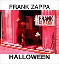

Заппа'zУх!Ой!
русский более или менее регулярный бюллетень для поклонников американского композитора
Frank'а Vincent'а Zappa'ы
Выпуск.46 (19 Ноября 2003)
Ди-Ви-Ди, Эй!
Такое чумовое название у этого нового формата. DVD-A. Передового способа увековечивать звук. Разводить по шести каналам. Два уха, один нос, темечко и копчик. А куда басы идут, догадайтесь сами.
Ди-Ди! Ви-Ди! Ви-Ди! Ди-Ди! Эй!
Ди-Ди! Ди-Ви! Ви-Ди-Ди! Ди-Эй!
Ди-Ди! Ви-Ди-Ви Ви-Ди-Ди! Эй
Но вполне. Вполне музыкальное. Ду-ваповое. Цена только лажовая. Неблагозвучная. Негармоничная. На воспроизводящую железку. Ту самую, что создаст у слушателя ощущение ранее доступное лишь таракану из барабана. Шесть сторон всесокрушающего света. Музыкальный Сталинград. Давись и пей. Иначе говоря, слушай.
Вот почему тянул. С четвертого февраля. Со дня выхода нового альбома старых записей. Молчал. Таился. Ждал стерео-слива в просто Cи-Ди. Дождался. Дружок из Орегона осчастливил сибирского голодранца. В сентябре. Теперь вот наслушался. Могу и отчитаться.
Ди-Ди! Ви-Ди! Ди-Ди-Ди! Эй!
Была у ФЗ традиция. Давать концерт в день всех нечистых. Леших и русалок. Halloween. Почти без пропусков. Начиная с 1972 года веселились. Первое такое гоблинское шоу со знаменитым составом Petit Wazoo в Нью-Джерси. Passaic. Семьдесят третий год - уже Чикаго. Искали. А в 1974 нашли. Точно и определенно место, где черти водятся. Упыри и вурдалаки. Нью-Йорк!
С этой поры различались только концертные залы. В семьдесят четвертом, семьдесят пятом и восемьдесят четвертом - Felt Forum. В семьдесят шестом, семьдесят седьмом, девятом - Palladium. Там же играли в восьмидесятом и восемьдесят первом.
Как правило давали за два дня четыре представления. И только один раз, в октябре 1978 целых шесть. С 27 по 31. Что-то около четырнадцати часов музыки, если судить по любительским заловым пленкам. На официальные носители попало много меньше. Вот список неутомимого Foggy G
Новый диск. Этот самый
Ди-Ди! Ди-Ди! Ви-Ви-Ди! Эй!
Шу-Ба-Ду-Ба! Уу-А!

С простым названием Halloween должен был восполнить пробел. Заполнить дыру. Во всех смыслах зияющую. Такой, наверное, был замысел у Zappa Family Trust. In New York Number 2. Можно предположить.Теоретически новый формат позволял. На привычный светоотражающий кружок скинуть весь материал. Закатать. В тот же диаметр с СиДишными разрешением 44.1 kHz/16 bits вписать все звуки веселого шабаша семьдесят восьмого. Практически. Шесть концертов уложились бы ровно в два диска. За минусом малозначительной мелочи. Песни Dancin' Fool, например.
Но нет. Продюсера нового диска Dweezil'а Zappa'у такой унылый, долго, но без затей играющий вариант не устроил. Он стрелочки завернул на полную катушку. 192kHz по 24 bits. И записал Dancin' Fool целых два раза. В аудио и видео варианте. Продемонстрировал возможности технического прогресса. И шесть каналов тут surround sound, и interactive features. Неплохо, конечно. Но лучше бы возможности своего отца Фрэнка, композитора, музыканта и bandleader'а. Увы.
Пропущенным оказался всего лишь навсегда бриллиант. Солнышко в зените. Легендарный The Big One of the Big One. Восемнадцати-минутный Packard Goose. С девятиминутной дуэлью двух солистов L. Shankar - скрипка, F. Zappa - гитара. После такой обиды, как говорится, насчет тринадцати-минутного Watermelon In Easter Hay с полутора-минутной дуэлью, можно и не заикаться. Не интересоваться. И так понятно. Задница.
Потом, конечно, слезы утрешь. Умоешься. Подышишь. И такая примерно вырисовывается передница.
Начав с августа семьдесят восьмого, пост-Baby Snakes состав
отыграл ни шатко ни валко, просто на уровне, без грома и молнии, на трех рок-фестивалях. В Европе.
26-08-78 - Ulm, Friedrichsau Fespltaz (в компании Genesis, McLaughlin and The One Truth Band, Alvin Lee And Ten Years After, The Scorpions, Brand X, Joan Baez)
03-09-78 - Saarbrucken Open Air Festival, Ludwigsparkstadion (без компании)
и наконец
09-09-78 - Knebworth House Open Air Festival, Stevenage, Hertfordsire, UK (с довеском The Tubes, Peter Gabriel, The Boomtown Rats, Rockpile and Wilko Johnson's Solid Senders)
После чего уже четырнадцатого августа высадился дома во Флориде и покатил на север.
Отрабатывали номер. Шли по проходу. Стандартный чес. И вдруг нечаянная встреча. Patrick O'Hearn! Фантастический бас-гитарист эпохи Baby Snakes является из ниоткуда и 13 октября (Suicide Chump (Video)) выходит на сцену Passaic, NJ. Вторым заряжающим. В упряжку с таким же фантастическим Arthur'ом Barrow. Два двойных без содовой кому хочешь башню сорвет. Музыканты FZ не оказались исключением. Пошли выпиливать фигурки. И вместе, и поодиночке. Что ни новый концерт, то градус выше. Температура прет. Зашкаливает.
В NJ, в деревне, начали с простого ОРЗ, а к Хэлловину в Новый Йорк притащили уже пневмонию в самой острой форме. Что ни композиция, то два соло. Или три. Одно зажигательнее другого.
Пять первых концертов - праздничный уикэнд и все по нарастающей. А во вторник тридцать первого окончательно свернулись белки-шмелки. Менингит. Труба. Коагуляция. Ртуть вытекла из градусника. Это потому, что к банде присоединился еще и Шенки. Скрипач. L. Shankar. В имени, котором гласных больше, чем в фамилии. Четыре раза по столько же. Lakshminarayana.
Три часа сорок пять минут. Кто выжил, не забудет никогда. Ну, а нам в эпоху всего безопасного. От секса до усекновенья башки с ногами. Отрезали несмертельную треть этого пожара, кусочек от 42 и 2. Гомеопатия. Halloween. Frank Is Back.
Ди-Ди-Ди! Ви-Ви-Ви! Ди-Эй!
Ап-Па-Ба-Ду-Ба! О-а!
Не много, но все же лучше, чем ничего. Пять солярок Фрэнка, одна - Шанкара, одна - Винни, по прозвищу Zeets, и Dancin' Fool. В профиль и фас. Ну и намек на то, как выглядели легендарные дуэли. The Deathless Horsie.
В общем, нормально. Еще один зальник. Хороший. Вполне. Бискивит без крема и орехов - все равно торт. Практически. Поскольку пахнет. Утраченным. Арому создает. Зефир. Мечты. Ну, и Двизил, дорогой, с новым форматом поигрался. На папином материале размялся. А мог и Ван Халлена обрамить. Он такой.
А кино и звуко воспроизводящий прибор все равно прикупать придется. В видео DVD уже переиздан и вовсю продается Does Humor Belong In Music. Чудесный фильм. Первая ласточка всей фильмотеки FZ. На выходе и птичка номер два. Baby Snakes. Все амазоны уже заказы принимают на декабрьскую доставку. А там, и страшно сказать, четыре часа ROXY ожидаются. В общем, пора, пора прицениваться. Заглядывать в бутики и ларьки. Выбирать аппарат. Который среди прочих поддерживает. Берет. Умеет. Такой ду-ваповый. Крутой и зажигательный формат.
Ди-Ви! Ви-Ви! Ви-Ди-Ди! Эй!
Искренне Ваш, Владимир Советов
http://www.arf.ru/
| Домой | Заппа'zУх!Ой! | Поиск | Хозяин |